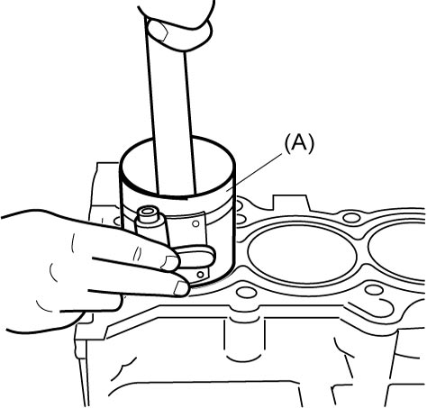

1D
| Piston, Piston Ring, Connecting Rod and Cylinder Removal and Installation |
NOTICE:
If any of the parts listed below is reinstalled into a position different from the original position, engine problems could occur.
If these parts are to be reused, keep them in numerical order so that they can be reinstalled in their original positions.
•Connecting rods
•Connecting rod bearing caps
•Connecting rod bearings
•Pistons
•Connecting rod bearing caps
•Connecting rod bearings
•Pistons
Removal
1)Remove engine assembly from vehicle. 
2)Remove cylinder head.
3)Mark cylinder numbers on all pistons, connecting rods and connecting rod bearing caps using silver pencil or quick drying paint.
4)Remove connecting rod bearing caps.
5)Remove carbon deposits from top of cylinder bore before removing piston from cylinder.
6)Push piston and connecting rod assembly out from the top of cylinder bore.
7)Remove connecting rod bearings from connecting rod and connecting rod bearing cap, if necessary.
Installation
NOTICE:
The engine will seize up if it is operated when the parts listed below are not properly lubricated.
Lubricate all the friction surfaces of these parts with engine oil before installing them.
•Crankshaft pins
•Connecting rod bearings
•Pistons
•Piston rings
•Cylinder walls
•Connecting rod bearings
•Pistons
•Piston rings
•Cylinder walls
1)Install connecting rod bearing to connecting rod bearing cap and connecting rod as follows.
a)Check mating surfaces of bearing backside and corresponding connecting rod are clean and dry.
b)Fit tab (1) of connecting rod bearing to groove (2) of connecting rod and bearing cap.
c)Press bearing end (3) until it becomes flush with connecting rod or connecting rod bearing cap mating surface.


 "Expand image")
NOTICE:
If oil is present between the bearing backside and connecting rod surface, the bearing could heat up to very high temperature, resulting in seizure.
Thoroughly wipe off any trace of oil that is present between the bearing backside and connecting rod surface.
2)Apply engine oil to pistons, piston rings, cylinder walls, connecting rod bearings and crankshaft pins.
3)When inserting piston and connecting rod assembly into cylinder bore, point front mark (1) on piston head to crankshaft pulley side (2).
 "Expand image")
4)Insert piston and connecting rod assembly into cylinder bore. Use special tool to compress piston rings and guide connecting rod into place on crankshaft.
Tap piston head to install piston into bore. Hold ring compressor firmly against cylinder block until all piston rings enter the cylinder bore.
Tap piston head to install piston into bore. Hold ring compressor firmly against cylinder block until all piston rings enter the cylinder bore.
NOTICE:
While inserting piston and connecting rod assembly into cylinder bore, connecting rod could touch the cylinder bore, piston cooling jet and crankshaft pin and cause damage to them.
Pay attention not to let connecting rod hit the cylinder bore, piston cooling jet and crankshaft pin.

 "Expand image")
5)Install connecting rod bearing cap (1) as follows.
NOTICE:
Using connecting rod bolts that are deformed exceeding the service limit could lead to engine problems.
Before installing connecting rod bearing cap, check that connecting rod bolts are not deformed exceeding the service limit referring to “Connecting rod bolt deformation” under Piston Pin and Connecting Rod Inspection:K14C.
NOTE:

For accurate angle tightening of connecting rod bolt (1) it is recommended to use tightening angle gauge (special tool).
 "Expand image")
a)Point front mark (protrusion) (2) on connecting rod bearing cap (1) to crankshaft pulley side.
b)Apply engine oil to bolt thread and seat of connecting rod bolt (3).
c)Tighten a pair of connecting rod bolts evenly and gradually to 20 N·m (2.0 kgf-m, 15.0 lbf-ft).
d)Loosen the bolts to torque 0 without losing sure contact of connecting rod and cap.
e)Retighten the bolts evenly and gradually to 25 N·m (2.5 kgf-m, 18.5 lbf-ft).
f)Retighten them 55°.
g)In the same manner as in Step c) – e), tighten connecting rod bolts of other cylinders.
 "Expand image")
6)Install cylinder head.
7)Install engine assembly to vehicle.